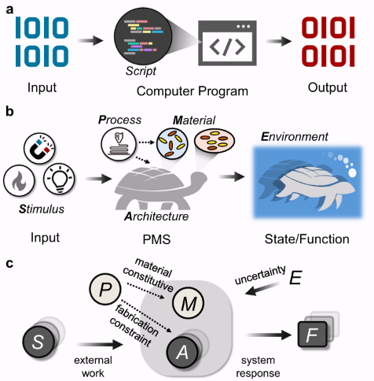
Our work
Journal articles, conference proceedings, and presentations from the lab. To see the complete and most up-to-date list, please visit my Google Scholar.
Google Scholar
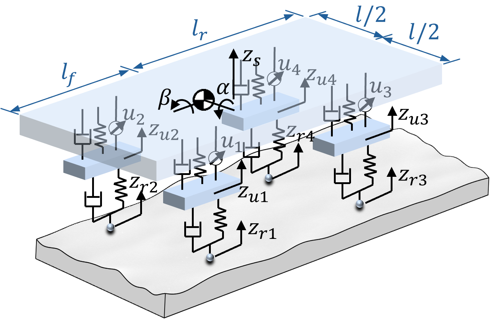
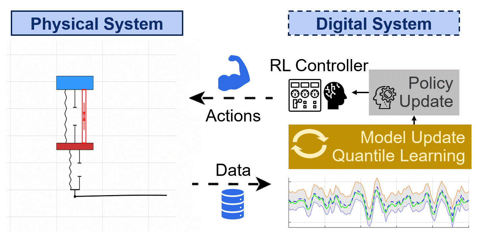
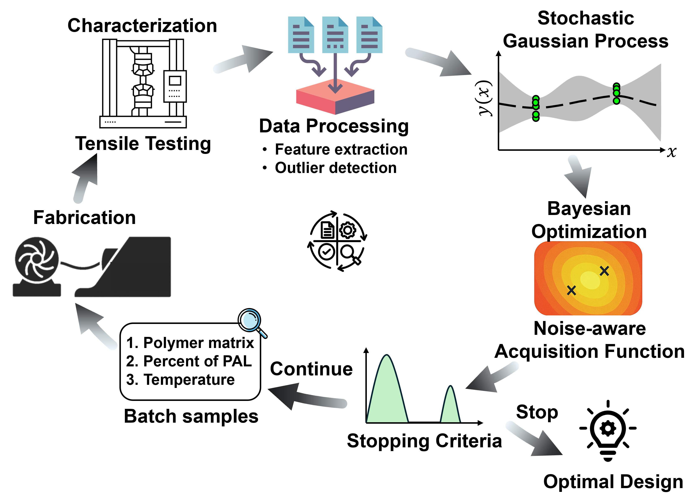
ASME IDETC-CIE Conference · Houston, Texas · August 2026 (accepted)
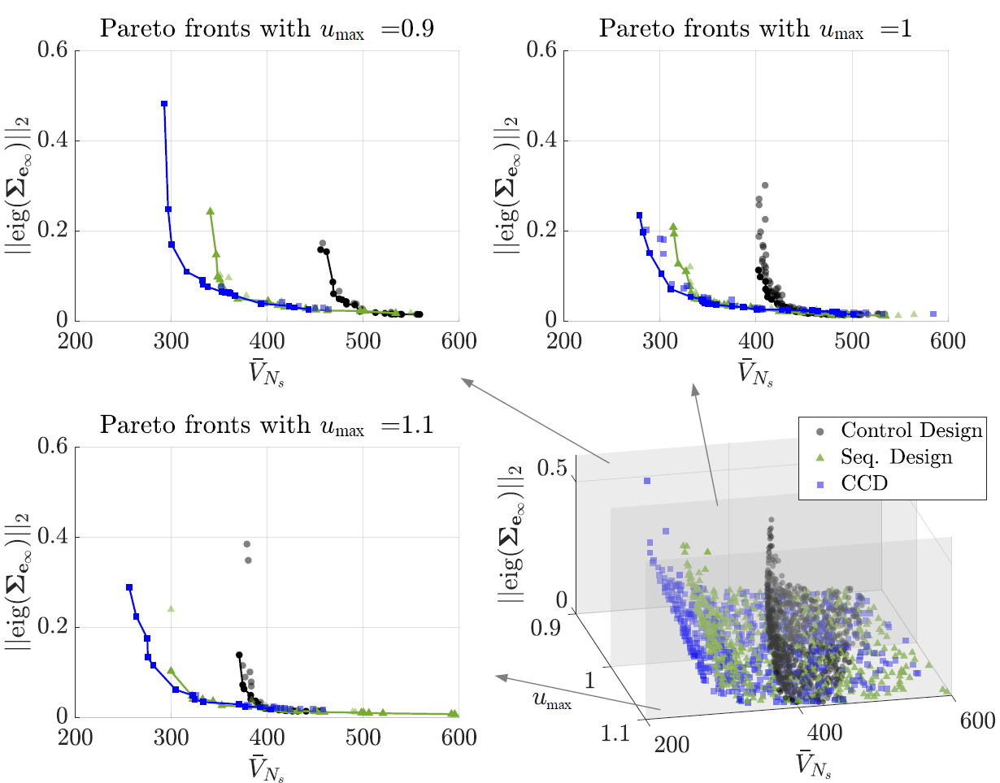
Journal of Mechanical Design · April 2026
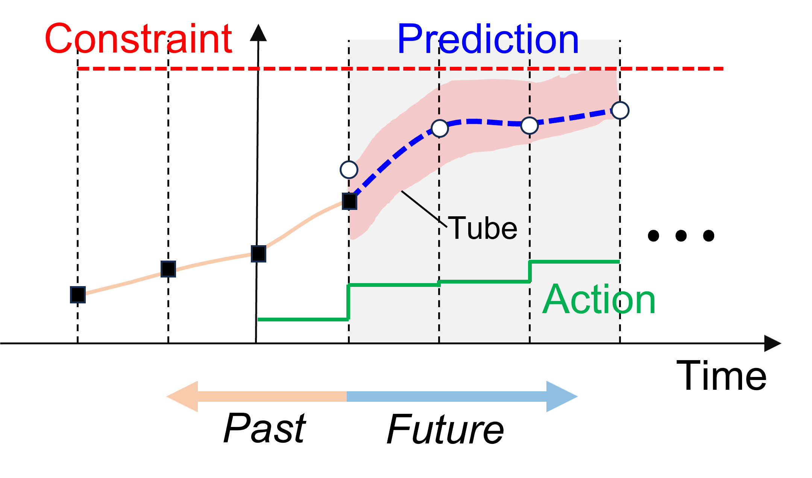
Journal of Mechanical Design · February 2026
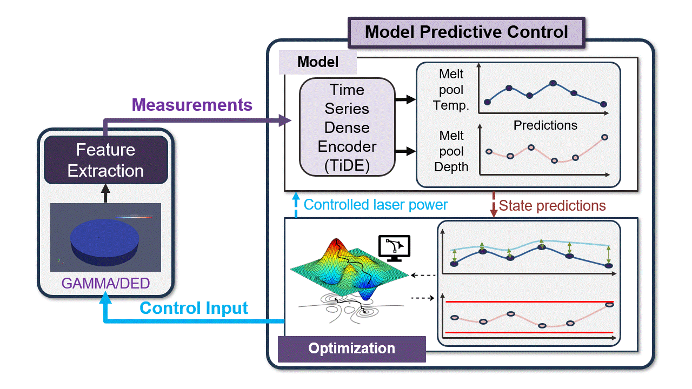
Journal of Manufacturing Systems · August 2025
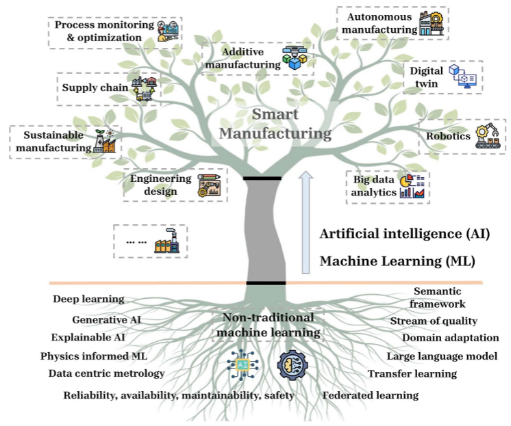
In Roadmap on AI and ML for Smart Manufacturing, ed. Jay Lee (Machine Learning: Engineering) · March 2026
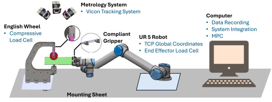
Journal of Manufacturing Systems · June 2026
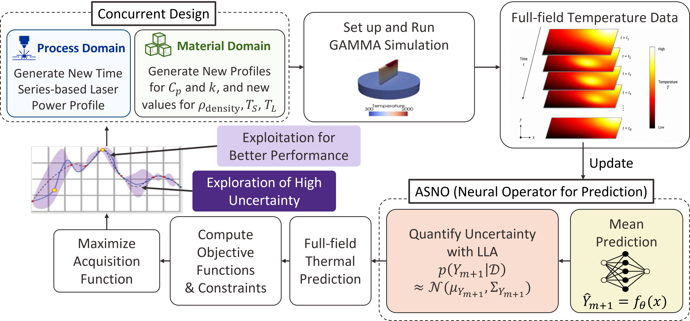
Manufacturing Letters (accepted) · NAMRC 54, University Park, PA · June 2026
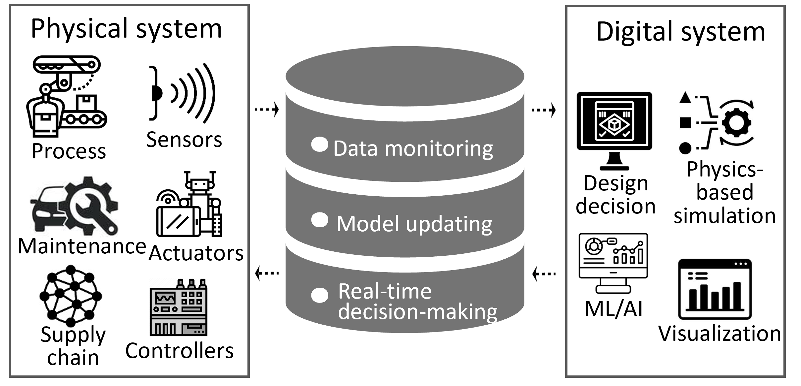
Engineering Optimization · January 2025
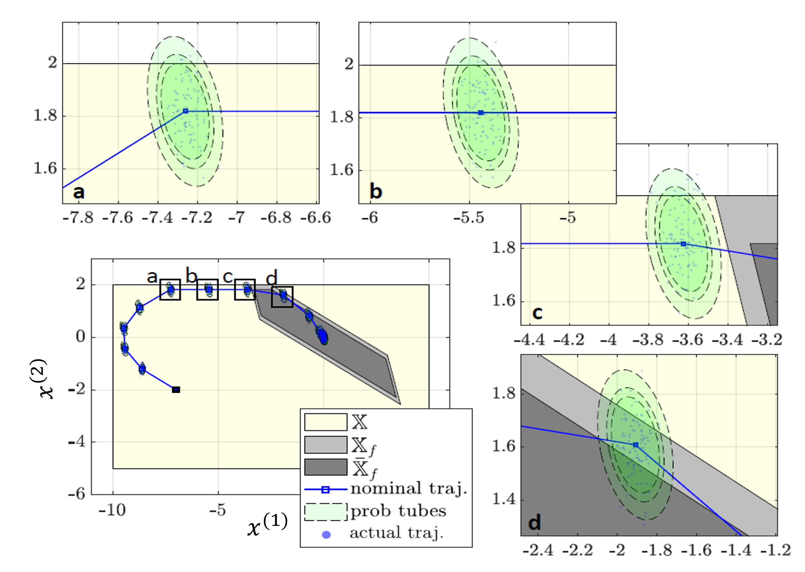
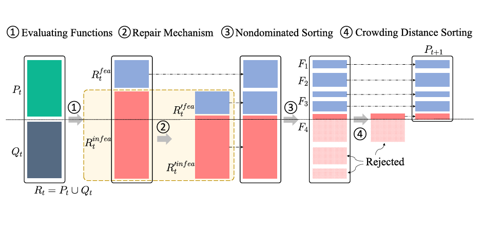
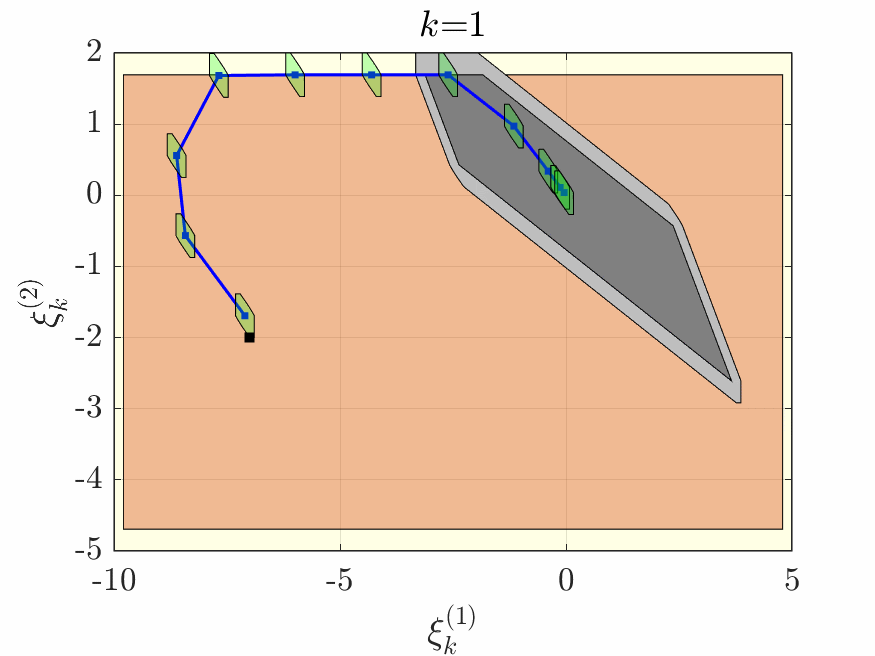
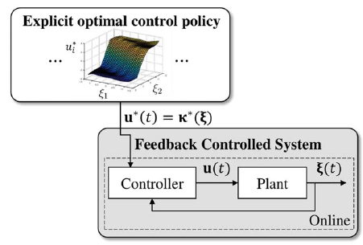
Journal of Mechanical Design · December 2022
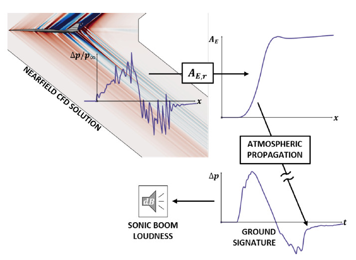
AIAA Scitech 2022 Forum · January 2022
Journal Articles
Conference Proceedings
Presentations (∗Indicates Presenter)